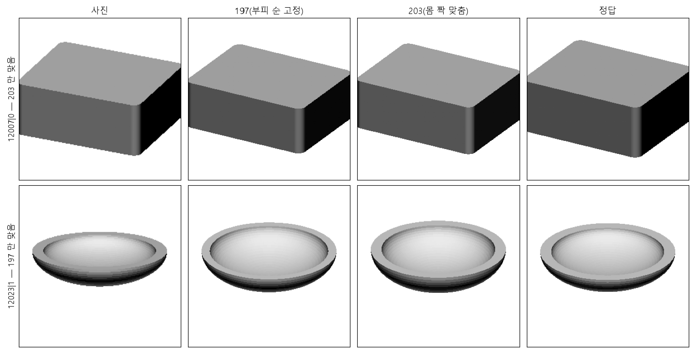

203 몸 짝 맞춤 손실 — ⑥ 이 숫자를 못 배우는 게 칸 순서 탓인가 (11-15 · 모델203.py · 손으로 정리)
분석
한 줄로
물음: ⑥ 손실이 몸을 부피 순으로 칸에 고정해서, 부피가 비슷한 몸끼리 과녁이 흔들려 숫자를 못 배우는 것인가?
답: 주 원인은 아니다. 칸과 몸을 가장 싸게 짝지은 뒤 손실을 매기자 학습 부품 모양 맞음이 0.051 → 0.081 로 조금 올랐지만, 미리 정한 D0 선(+0.05)에 못 미쳤다. 판정: D0 에서 멈춤.
왜 이 판을 했나
tr200 이 데이터로 안 오른 뒤 디버그 1 에서 ⑥ 을 까 봤다. 학습 부품에서도 모양 맞음이 6~7 % 였고, 고르는 칸(종류 · 축)은 학습 부품에서 잘 맞히는데 숫자 칸(치수 · 자리)은 학습과 시험 손실이 거의 같았다. 시험 부품의 51~59 % 에 부피가 20 % 안으로 비슷한 몸이 있었고, 모델이 낸 칸 순서가 정답 순서와 63 개 부품에서 엇갈렸다. 사용자는 「가장 가까운 것은 뭔가 아닌 것 같지만 일단 해 보자」고 했다.
바꾼 것 하나
손실을 매기기 전에 예측 칸 6 개와 정답 몸을 일대일로 가장 싸게 짝짓는다(헝가리안 · DETR 과 같은 방식). 짝 비용은 있음 · 종류 · 축의 로그 확률과 치수 · 자리 차이다. 나머지는 197 과 같다(부품 9,076 × 렌더 2 · 182 출발 무게 · 30 바퀴 · 시드 194).
결과

| 203 | 197 대조 | 통과선 | 넘었나 | |
|---|---|---|---|---|
| D0 학습 부품 99 · 모양 맞음 | 0.081 | 0.051 | 197 + 0.05 | ✗ |
| D1 시험 198 장 · 모양 맞음(정보) | 0.086 | 0.051 | 0.081 · 위상 손실 ≤ 2 | ✗ (위상 92 대 102) |
| 시험 10 % 안 | 0.136 | 0.157 |
시험 짝 비교: 203 만 맞음 10 · 197 만 맞음 3 · McNemar p 0.09.
왜 이렇게 나왔나
확인한 것
- 짝 맞춤은 5 % 안을 학습 · 시험 모두 3 %p 남짓 올린다. 하지만 학습 부품 맞춤이 8 % 에 그쳐 숫자 덜 배움은 그대로다.
- 시험 위상 맞은 장은 102 → 92 로 떨어졌다.
- 처음 손 검사: 칸 순서만 바꾼 완벽한 예측을 넣으면 고정 순서 손실은 치수 57, 짝 맞춤 손실은 0 이다(모델203.검사).
짐작 (아직 확인 안 함)
- 짝 맞춤은 모델 자신의 예측으로 짝을 정해서, 몸을 잘못 읽으면 틀린 짝이 굳는다. 위상이 떨어진 게 그 탓일 수 있다.
한계
- 시드 하나 · 30 바퀴 하나. 학습 부품 99 · 시험 198.
- 짝 비용의 무게는 손실과 같게 두었고 따로 고르지 않았다.
배운 것과 다음
칸 순서는 작은 몫이고, ⑥ 이 그림에서 숫자를 뽑는 일 자체가 막혀 있다.
- tr200(자료) · 202(입력) · 203(순서) 셋 다 12~13 % 천장을 못 넘었다.
- 다음 제안: 숫자는 학습 대신 3D 점에 도형을 맞춰서 구한다(tr196 천장 0.28).